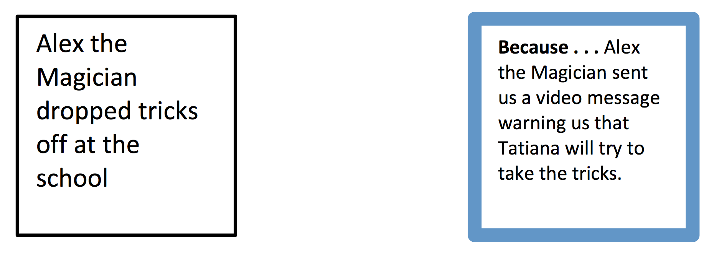
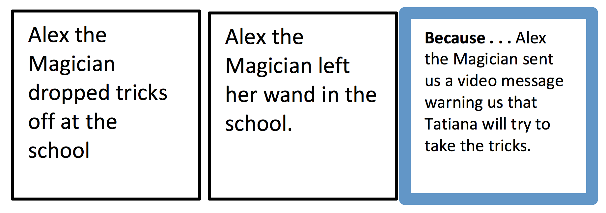
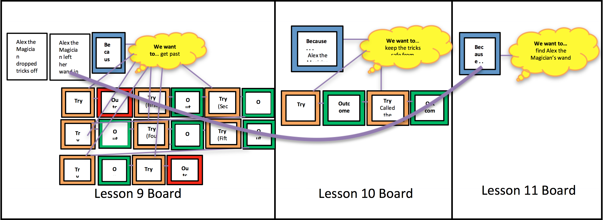

Objectives: Upon completion of the following lesson, students will be able to:
Identify distal causes across multiple events (primary)
Identify important events in a story (primary)
Identify goals attempts/tries, and outcomes from two perspectives (primary)
Identify inferred goals/attempts for the protagonist (review/reinforce)
Students explain/verbalize what events and causes are (review/reinforce)
Students explain/verbalize what goals, attempts, and outcomes are (review/reinforce)
Establish that goals are important to the story
Recall/retell texts using graphic organizers (build working memory strategies) (secondary)
Materials Needed:
Base Appendix Folders (in Teacher Box):
Sample Procedure Cards (Causal Connections, Goals/Tries/Outcomes, Inference) (see Base Appendix, pp. 1-3)
Identifying Causes and Events Anchor Chart (Base Appendix, p. 4)
Student Goal/Try/Outcome Cards (on tablet or actual cards, see Base Appendix, p. 5)
Goal/Try/Outcome Anchor Chart (for reference only, Base Appendix, p. 6)
How to Place Cards on Goal/Causal Connections Organizer (Base Appendix, p. 7)
Blank Goal/Causal Organizer (Base Appendix, p. 8)
Outcome Prompt Flowchart (Base Appendix, p. 9)
Inference Anchor Chart (Base Appendix, p. 10)
Inference Prompts (Base Appendix, p. 11)
You Do It Together Conversation Starters and Prompts for Small Group Practice (Base Appendix, p. 12)
Small Group Practice Chart (Base Appendix, pp. 13-15)
Gestures Instruction Sheet (for reference only, Base Appendix, pp. 16-17)
Directed Movement Activities (Base Appendix, pp. 18-22) (laminated copies)
Green folder for teacher with Student Evaluation Script (Base Appendix, pp. 25-45)
Green folders with laminated student evaluation chart (6) (Base Appendix, p. 45)
Lesson 11 Appendix (To be printed):
Lesson 11 Introduction: Dominoes Mastery Sheet (Lesson 11 Appendix, p. 1)
Lesson 11 Introduction: Lottery Ticket Mastery Sheet (Lesson 11 Appendix, p. 2)
Lesson 11: Magician Narrative Review from Lesson 9 Mastery Sheet (our perspective) (Lesson 11 Appendix, p. 3)
Lesson 11: Magician Narrative Review from Lesson 10 Mastery Sheet (our perspective) (Lesson 11 Appendix, p. 4)
Lesson 11: Magician Narrative Review from Lesson 10 Mastery Sheet (Tatiana’s perspective) (Lesson 11 Appendix, p. 5)
Lesson 11 Magician Narrative Mastery Sheet (Lesson 11 Appendix, p. 6)
Strega Nona Mastery Sheet (Lesson 11 Appendix, p. 7)
Student Evaluation Record Sheet (make 2 copies) (Lesson 11 Appendix, pp. 8-9)
Refrigerator Sheet to send home (make 6 color copies) (Lesson 11 Appendix, p. 10)
Technology:
Laptop
Teacher Tablets (2); Student tablet on Demo Mode (1)
Student Tablets (6)
Teacher Box:
Pens (3)
Plastic Cups (6)
Apron
Sharpie
Paperclips
Small Sticky Notes (assorted colors) (6 pads)
Chart Marker
Stickers
Chips for Green Folders (6)
Wet Erase Markers (3)
O-Rings
Wikki Stix
Velcro Boards (4)
Story Creation Bags (set of 12)
Example Bag (1 goal card, 1 try card, 1 outcome fail card, 1 outcome yes card, 1 because card, and 1 because string)
Role Cards (2 sets; I Do, I Help, I Watch, You Do Together, You Help, You Watch)
Role Charts (set of 2)
Procedure Cards (8 sets; 1 goal card, 1 try card, 1 outcome yes card, 1 outcome fail card, 1 procedure card)
Small Group Practice Flip Charts (2)
Videos/PowerPoints Needed:
Video: Lesson 11 Video from Alex the Magician (1 copy) (You should get this video from either your magician or Angela)
PowerPoint: Strega Nona (1 copy)
Pre-Printed Cards (in Lesson 11 Box):
Lesson 11 Intro: Lottery example
Lesson 7 Review: Dominoes Causal Chain
Lesson 9 Magician Narrative Review (from our perspective)
Lesson 10 Magician Narrative Review (from our perspective)
Lesson 11 Magician Narrative
Lesson 11 Strega Nona
Boards from Previous Lesson(s):
Lesson 7 Review: Dominoes Causal Chain (build before the lesson begins)
Lesson 9 Magician Narrative Review (from our perspective) (build before the lesson begins)
Lesson 10 Magician Narrative Review (from our perspective) (build before the lesson begins)
Additional Materials and Props (in Lesson 11 Box):
Wand
2 Strega Nona magic “pasta pots” (a garlic tap with a clay “pot” on top)
Yellow Play-Doh (rolled into small balls—check to make sure the doh is fresh and rolled into small balls)
Magician Materials (in Magician Box):
None needed
Lesson 11
Setting Up for the Magician Narrative
Before the lesson begins:
Discuss and make arrangements with your co-teacher and with research personnel where to place the wand. It should be somewhere in your classroom where Alex the Magician may have inadvertently left it when she was there.
Place the wand in the classroom location.
Building Boards (3) from Previous Lessons:
Before the lesson begins:
Build the Lesson 7 Review: Dominoes Causal Chain Velcro board using the Lesson 7 Review: Dominoes Causal Chain pre-printed cards, which are in the Lesson 11 box.
Use the Lesson 11 Introduction: Dominoes Mastery Sheet (Lesson 11 Appendix, p. 1) as a guide when building the board.
Build the Lesson 9 Magician Narrative Review (from our perspective) Velcro board using the Lesson 9 Magician Narrative Review pre-printed cards, which are in the Lesson 11 box.
Use the wet erase marker to write in teacher, co-teacher, and students’ TRIES on blank TRY cards.
Use the Lesson 11: Magician Narrative Review from Lesson 9 Mastery Sheet (our perspective) (Lesson 11 Appendix, p. 3) as a guide when building the board.
Build the Lesson 10 Magician Narrative Review (from our perspective) Velcro board using the Lesson 10 Magician Narrative Review (from our perspective) pre-printed cards, which are in the Lesson 11 box.
Use the Lesson 11: Magician Narrative Review from Lesson 10 Mastery Sheet (our perspective) (Lesson 11 Appendix, p. 4) as a guide when building the board.
Strega Nona Set-Up:
Before the lesson begins:
Check the garlic tap in the Lesson 11 box to make sure that the holes of the garlic tap are clean. You might need to use a toothpick/pin/pencil to poke out dried play-doh from the holes.
Later in the lesson the Co-teacher will assist during the reading of the Strega Nona powerpoint. Beginning on Slide 10 the Co-teacher will “make pasta” using the “pasta pot” (i.e., the garlic tap) and the small balls of yellow Play-Doh. From slides 10 through 25 the Co-teacher will casually (and continually) make enough pasta to fill the pasta pot.
The clay “pot” should be on top so the play-doh flows from the bottom to the top of the pot and over the top. It is a little awkward to do.
The Co-teacher will continue “making pasta” with the play-doh until Strega Nona says the magic words on Slide 25.
Materials for Part 1: Review/Explicit Instruction
Goal, Try, and Outcome card (on tablet or actual cards, see Base Appendix, p. 5)
Procedure cards (1 for each child, 1 for each teacher)
Velcro board: Lesson 7 Dominoes Causal Chain Review (build before the lesson begins)
Pre-printed cards: Lesson 11 Intro: Lottery (build board during the lesson)
Velcro board
Wikki Stix
1. Review/Explicit Instruction (15 min.)
[Review rules chart by reading rules aloud to the students. Review behavior management system including consequences of not following rules (losing a sticky note and potentially not being able to get a toy at the end of the lesson if they don’t have all of the sticky notes with their name on it). Review how to earn stickers that go in plastic cups.]
Say: “Last time I asked you to look for goals, tries, and outcomes from TWO perspectives and to look for DISTAL causes when you are reading, watching television, playing games, or in real life. Did you notice any goals, tries, and outcomes from TWO perspectives while you were at home since our last lesson?”
[Students respond]
[As students respond make sure that students identify the goals, tries, and outcomes in their own stories. As a follow-up ask them “Why did you have this goal?” “Why did you make that try?” and “Why did that outcome happen?” to establish causal connections]
Say: “Yesterday, my friend gave me a vanilla cupcake she had made. It looked delicious! I decided I would eat it after dinner. So, I set it down on the coffee table. Then I cooked dinner, ate what I cooked, did the dishes, and talked to my mom on the phone. When I went to the coffee table to get the cupcake it was all gone. My puppy had eaten it! Leaving the cupcake on the coffee table caused my puppy to eat it. Lots of events happened in between, which makes this a DISTAL cause.”
[Explain to students that we will now begin with “I Do/You Help.”]
Say: “We are now going to begin with ‘I Do/You Help.’ [Place these roles onto the Roles Chart.] Sometimes when we are working together, once I think that you are getting the hang of it, I will give you a chance to help me out. We will call this time: ‘I Do/You Help’.” [Point to the “I Do/You Help” on the Roles Chart.]
Say: “When it is time for ‘I Do/You Help,’ I will still be teaching, but you will be able to participate by offering your ideas or helping me figure out the answers. You should still be listening with your ears [point to ears], watching with your eyes [point to eyes], and thinking with your brain [point to brain]. When you have something to add you can let me know by raising your hand [raise hand]. This will help you think and learn the information by participating more—it will also help me to know what you understand and what you still need help on.” [Use Gestures for Explaining Roles in Base Appendix, p. 16.]
Say: “In the last session we learned to identify DISTAL causes. Today we will continue to practice finding goals, tries, and outcomes. We will also practice finding distal causes, and goals, tries, and outcomes from TWO perspectives. We will also still be remembering to ask our WHY questions [make “why” gesture] to understand what caused a character to do something.”
[Use the script below to remind students about declarative, procedural, and conditional knowledge associated with events, causes, goals, tries, outcomes, and displaying the Goal/Try/Outcome cards.]
[This review should be QUICK and almost game-like. To make it quicker, you should commit the script to memory as much as you can and call on students rather than waiting for them to raise their hands.]
Say: “Let’s review what we have learned so far about EVENTS, CAUSES, GOALS, TRIES, and OUTCOMES. Remember, you can use the procedure card to help you remember.”
Review what events and causes are . . .
Ask: “What is an event?”
[Events are the things that happen in a story.]
Ask: “What question do we ask ourselves to help find the events in a story?”
[What happened?”] [make “what happened” gesture]
Ask: “Sometimes some events cause other events to happen. What is a cause?”
[A cause explains WHY something happened in a story.]
Ask: “What question do we ask ourselves to find the cause?”
[WHY did this happen?] [make “why” gesture]
Ask: “How do we show causal connections on our Velcro board?” [We show a causal connection using a Because String]
[Hold up procedure card.]
Say: “You can use these cards to help you remember what events and causes are. Last time we learned about a special kind of causal connection, a DISTAL cause, where one event causes another event to happen much later.”
[Point to events and Because Strings in the distal cause figure on the procedure card while reviewing]
Review how to find the GOAL…
Ask: “What is a goal?”
[Something a character wants to do or get.]
Ask: “When do we find a goal in a story?”
[The beginning of the story.]
Ask: “When we find a goal, what card do we hold up?”
[Tap/hold up your goal card]
[If tablets are available follow the directions in this dark gray box]
[Activate question by tapping the fidelity box to the left.]
[Students should tap on the GOAL card and hold the tablet up]
[Before tapping the ‘Done’ button on the top right of the screen to move on, teachers should double-check to make sure that all students have responded to the question by looking at the list of student responses on the top left.]
[If tablets are NOT available: Have students hold up their goal card.]
Ask: “How do we record the goal on our Velcro board?”
[Record the goal on one of the yellow thought bubbles.]
[Display the sample thought bubble and the goal card].
Ask: “Why do we need to find a goal in a story?” [make “why” gesture]
[Because a goal is the important part of a story. Knowing a goal in a story helps us to remember and understand the story better.]
Review how to find the initiating event using the Because Card.
Ask: “After we figure out the goal, what question do we ask ourselves?”
[Students respond: WHY does the character have this goal?] [make “why” gesture]
Say: “This helps us think about what CAUSED the character to have that goal.”
Ask: “How do we record WHY the character had this goal on the Velcro board?”
[On a Because Card]
Ask: “After I write the CAUSE on the blue Because Card I put it where?”
[Students respond: On the Velcro board next to the goal.]
Say: “This will remind us of what CAUSED the character to have the goal. We place this Because Card on the Velcro board [hold up the blue Because Card], and we put it right up here next to the goal.” [Place the blue Because Card to the LEFT of the thought bubble.]
Say: “Since this is a CAUSE, we can connect the blue Because Card to what it CAUSED. So, we can use a Because String to connect the blue Because Card to the goal.” [Point to the wikki stick connecting the Because Card to the thought bubble.]
Next, review finding TRIES:
Ask: “Once we know what a character’s goal is, what do we look for next?”
[What a character did to try to get their goal.]
Ask: “What is a try?”
[Tries are actions/things a character does to try to get what they want/the goal.]
Ask: “When we see a try in the story, what card do we hold up?”
[Tap/hold up your try card]
[If tablets are available follow the directions in this dark gray box]
[Activate question by tapping the fidelity box to the left.]
[Students should tap on the TRY card and hold the tablet up]
[Before tapping the ‘Done’ button on the top right of the screen to move on, teachers should double-check to make sure that all students have responded to the question by looking at the list of student responses on the top left.]
[If tablets are NOT available: Have students hold up their try card.]
Ask: “How do I record the tries on the Velcro board?”
[Write the try on a try card.]
Ask: “What question do we need to ask ourselves after we find a try?”
[WHY did the character try that? / What caused the character to try that?] [make “why” gesture] [Point to the WHY question on the procedure card.]
Say: “When we think about WHY we TRIED something, it means there is a causal connection. [make “why” gesture] What do we use to connect what the character TRIED and WHY they tried it? [A Because string]
Next, review finding OUTCOMES:
Ask: “After we find a try, what do we look for next?”
[What was the outcome of the try?]
Ask: “What is an outcome?”
[An outcome is the result of a try.]
Ask: “What is an outcome fail?”
[The character did not get their goal.]
Ask: “When we see an outcome fail, what card do we hold up?”
[Tap/hold up your outcome fail card.]
[If tablets are available follow the directions in this dark gray box]
[Activate question by tapping the fidelity box to the left.]
[Students should tap on the OUTCOME FAIL card and hold the tablet up]
[Before tapping the ‘Done’ button on the top right of the screen to move on, teachers should double-check to make sure that all students have responded to the question by looking at the list of student responses on the top left.]
[If tablets are NOT available: Have students hold up their outcome fail card.]
Ask: “How do I record an outcome fail on the Velcro board?”
[Write what happened on an outcome fail card.]
Ask: “What is an outcome yes?”
[The character did get their goal.]
Ask: “When we see an outcome yes, what card do we hold up?”
[Tap/hold up your outcome yes card.]
[If tablets are available follow the directions in this dark gray box]
[Activate question by tapping the fidelity box to the left.]
[Students should tap on the OUTCOME YES card and hold the tablet up]
[Before tapping the ‘Done’ button on the top right of the screen to move on, teachers should double-check to make sure that all students have responded to the question by looking at the list of student responses on the top left.]
[If tablets are NOT available: Have students hold up their outcome yes card.]
Ask: “How do I record an outcome yes on the Velcro board?”
[Write what happened on an outcome yes card.]
Ask: “What question do we need to ask ourselves after we find an outcome?” [Why did this outcome happen?] [make “why” gesture] [Point to the WHY question on the procedure card.]
Ask: “When we think about WHY we had an OUTCOME, we are looking for a causal connection. What do we use to connect what the character’s OUTCOME was and WHY they had this OUTCOME?” [A Because string]
Ask: “Once we have found a try and outcome, what question do we ask next?”
[Is the character’s goal still the same?]
Say: “Remember in our previous lessons we also learned how to be DETECTIVES. Sometimes when we are reading a book or watching a video, the author doesn’t always tell us everything. Then we have to be detectives and look for clues to help us figure things out.”
Inference Gestures
As the teacher is explaining the steps to making inferences, teachers and students should use the corresponding gestures outlined on the procedure card in the Gestures for Making Inferences Instructions (see Base Appendix, p. 17).
Say: “When we are being detectives there are several steps we have to remember. We need to:”
Say: “First, we ask, ‘What happened?’” [make “what happened” gesture]
Say: “Then, like a DETECTIVE, we look for ‘clues’ [make spyglass gesture] in the words or in the pictures to help us figure out what happened.”
Say: “Once we identify the clues, then we think [point to brain] about how the clues might relate to one another. This means we have to use our own experiences and what we know to help us think about how the clues might be connected.”
Say: “Then we make a connection [make interlaced finger gesture] to connect the different clues together.”
[Refer students to procedure cards.]
Say: “These cards will help us to remember how to find the goals, tries, and outcomes in a story, how to find simple causes, causal chains, distal causes, and how to make inferences. If you need a reminder at any time, or forget a step, you can look at the card and see the steps.”
[Review the steps with the students using procedure card.]
Say: “Remember, the Velcro boards that we chart out can help us to retell a story. We record all the important things in a story, the goals, tries, and outcomes, and then we can look back at them to tell the story again.”
Say: “Today we are going to talk a bit about important events. We have mentioned important events before, but I want to remind you what an important event is.”
Say: “Some events are more important in a story than other events. An important event is an event in the story that is so big, that without the event, the story would not make sense.”
Say: “Important events are those events that have a lot of causal connections. Important events cause many events to happen in the story, and they might be very important in helping the character get his/her goal. Without that important event, a lot would be missing from the story.”
Charting the Lottery Ticket Example
Chart these events on a Velcro board using the pre-printed Introduction: Lottery Ticket cards in the Lesson 11 box and use Because Strings to show the causal connections.
Use the Lesson 11 Introduction: Lottery Ticket Mastery Sheet (Lesson 11 Appendix, p. 2) to guide you as you chart.
Say: “For example, let’s say I woke up one day and went to the gas station (place pre-printed card on board). When I was there, I got gas (place pre-printed card on board), a bottle of water (place pre-printed card on board), and a lottery ticket (place pre-printed card on board).”
Say: “When I went home I scratched the ticket and won the lottery (place pre-printed card on board). Winning the lottery caused me to call my family and friends (place pre-printed card on board), buy a new car (place pre-printed card on board), go shopping at the mall (place pre-printed card on board), and celebrate at dinner by eating some cake (place pre-print card on board).”
Say: “Now everything that happened in my example was an event, but if I had to think of the most important event in the story, the event that caused a lot of other events to happen, an event that if I took it out the story wouldn’t make sense, I would say that the really important event would be getting a lottery ticket.”
[Place Because Strings between the “getting a lottery ticket” event and the cards that say “won the lottery,” “call family and friends,” “buy a new car,” “go shopping at the mall,” “celebrate at dinner by eating some cake”]
Say: “If I just went to the gas station and came home, and didn’t get a lottery ticket, would I have won the lottery? No. Would I have called my friends and family? No. Would I have bought a new car? No. Would I have gone shopping at the mall? No. Would I have celebrated at dinner by eating some cake? Probably not!”
Say: “All of those events happened BECAUSE [make finger move] I got a lottery ticket. So, getting the lottery ticket was a really important event in this story. It caused a lot of other events to happen. We can see that because it is connected to 5 other events.”
[swirl a wikki stick and place on the “got a lottery ticket” card]
Say: “We will use this swirly string to indicate which events are the most important.”
Say: “We might also say that winning the lottery was also a really important event BECAUSE [make finger move] I wouldn’t have done all of the other things if I hadn’t won the lottery. So, that is also a really important event.”
[swirl a wikki stick and place on the “won the lottery” card]
Velcro Board for Domino Activity
Show the pre-made Velcro board demonstrating the causal chain in the domino activity.
Say: “We can also think back to our causal chain with the dominoes.”
[Place the Lesson 7 Dominoes Causal Chain Review board (built before the lesson began) on the table]
Say: “Remember I tap the first domino with my finger, which caused the second domino to fall, which caused the third domino to fall, and so on? What was the most important event in that story?”
[Student response: Tapping the first domino with my finger]
Say: “Tapping the first domino with my finger started the causal chain. Without that event, the entire causal chain wouldn’t have happened. So, tapping the first domino with my finger was a very important event! We will put a swirly string on that card to show that it is the most important event.”
[swirl a wikki stick and place on the “pushed domino 1” card]
Say: “So, an important event is one that causes several other events to happen, or it is an event that helps the characters to get their goals. We will be looking for important events in today’s lesson.”
Materials for Part 2: Teacher Modeling/ Guided Practice with Magician Narrative
Goal, Try, and Outcome card (on tablet or actual cards, see Base Appendix, p. 5)
Procedure cards (1 for each child, 1 for each teacher)
Lesson 11: Magician Narrative Review from Lesson 9 Mastery Sheet (our perspective) (Lesson 11 Appendix, p. 3)
Lesson 11: Magician Narrative Review from Lesson 10 Mastery Sheet (our perspective) (Lesson 11 Appendix, p. 4)
Lesson 11 Magician Narrative Mastery Sheet (Lesson 11 Appendix, p. 6)
Pre-printed cards: Lessons 9 Magician Narrative Review (our perspective)
Pre-printed cards: Lessons 10 Magician Narrative Review (our perspective)
Pre-printed cards: Lesson 11 Magician Narrative
Velcro boards
Wikki stix
Wet erase marker
Video: Lesson 11 video message from Alex the Magician
Wand (in Lesson 11 Box)
Overview of the Magician Narrative Activity (This is just an overview. The script follows.)
Before the lesson begins:
Discuss and make arrangements with your co-teacher and with research personnel where to place the wand. It should be somewhere in your classroom where Alex the Magician may have inadvertently left it when she was there.
Place the wand in the classroom.
Materials to Take Along on Journey:
Teacher will bring:
Tablet with lesson on it
Co-teacher will bring:
1 Velcro board
Wikki stix
Pre-printed cards Lesson 11 Magician Narrative (build board during the lesson)
Wet erase marker (to write
Students will bring:
Tablets (or Goal/Try/Outcome cards)
Procedure cards
Overview of Magician Narrative Activity:
Watch video message from Alex the Magician.
Have new goal of finding her wand.
Add 2 new events onto the old Lesson 9 Magician Narrative Review board (you learn about these new events in the video).
Try to find the wand.
Take 1 Velcro board and 1 set of pre-printed cards for the Magician Narrative with you to chart the tries and outcomes as you look for the magic wand.
You will make 2 TRIES:
TRY #1: unsuccessful in classroom
TRY #2: successful in classroom (find wand)
Chart each TRY before going to the next location.
Boards from Previous Lessons Needed:
Lesson 9 Magician Narrative Review (from our perspective) Velcro board (built before lesson begins)
Lesson 10 Magician Narrative Review (from our perspective) Velcro board (built before lesson begins)
2. Teacher Modeling/ Guided Practice with Magician Narrative (25 min.)
Say: “Today we will continue learning about events and causes. In particular, we will continue learning about DISTAL causes. Remember, in a distal cause, one event causes another event later on in the story. There can be many events between the event and its cause. We will also be looking for important events.”
[Explain to students that we will now continue with “I Do/You Help.”]
Say: “We are now going to continue with ‘I Do/You Help.’ [Place these roles onto the Roles Chart.] That means I’ll be doing some of the talking and explaining, and you all will be helping me out. You will be listening with your ears [point to ears], watching with your eyes [point to eyes], thinking with your brain [point to brain], and raising with your hand [raise your hand].” [Use Gestures for Explaining Roles]
[Recall with students (as time permits have students assist with the recall) what has been happening in our story.]
[Bring out the Lesson 9 Magician Narrative Review board and refer to it while saying the following]:
Say: “Two lessons ago we found the magic tricks that Alex the Magician had left for us. Her cousin Tatiana was here, and was trying to take the tricks from us! Luckily we were able to get most of the magic tricks back to the classroom safely.”
[Bring out the Lesson 10 Magician Narrative Review board and refer to it while saying the following]:
Say: “Remember last time Tatiana was back, and she was trying to trick us to get us to leave the classroom so she could take the magic tricks. We had different goals—Tatiana wanted to take the tricks, and our goal was to keep the tricks safe. First she tried telling us there was a puppy in the hallway, but Ms./Mr. Co-teacher stayed here and guarded the room so that Tatiana could not take the tricks. Next Tatiana tried telling us there was someone in the office who needed to see us, but we called the office and found out there was no one who wanted to see us! Tatiana was not able to get her goal of taking the tricks, but we got our goal of keeping the tricks safe!”
Say: “Well, I have some news. When I got to the school today, I found a new video message from Alex the Magician. I’m pretty sure she is still in Cincinnati trying to learn a cool new trick at the Magician’s Conference. I’m sure she’s just updating us on how she’s doing. Let’s see what she is up to today.”
[Watch video message from Alex the Magician.]
Magician’s Video Message
In the video Alex will explain that when she was at the school several days ago dropping off the magic tricks, she accidentally left her wand somewhere in the school. She can’t remember where she put it, and she needs all of her magician’s equipment to get back into the Magician’s Club, including the wand. She asks us if we can look around the school to see if we can find her wand.
Alex the Magician Will Say:
“Hey guys. Alex the Magician here. I wanted to send you a quick message asking for your help—again. Um, I uh, think I maybe sort of left my wand at the school when I was dropping off my tricks a few days ago. Without it, I won't have all of my Magician’s Inventory. [She will take the check mark off of that item on her Magician’s Checklist] I really hope you guys can find it for me. Thanks so much! Well, I gotta go. I’ll see you soon!”
Ask: “Oh my, here we go again! She is pretty forgetful. Oh well, I guess we should get to work. Does anyone see a new GOAL for us?”
[If tablets are available follow the directions in this dark gray box]
[Activate question by tapping the fidelity box to the left.]
[Students should tap on the GOAL card and hold the tablet up]
[Student response: To find Alex the Magician’s wand.]
[If students do not tap on the GOAL card and hold up their tablet]
Say: “What should you do if you hear a GOAL in a story?”
[Students tap on the GOAL card and hold the tablet up]
[Before tapping the ‘Done’ button on the top right of the screen to move on, teachers should double-check to make sure that all students have responded to the question by looking at the list of student responses on the top left.]
[If tablets are NOT available follow directions in this light gray box]
[Students should hold up their GOAL card]
[Student response: To find Alex the Magician’s wand.]
[If students do not hold up the GOAL card]
Say: “What should you do if you hear a GOAL in a story?”
[Students hold up the GOAL card]
Ask: “Can someone place the goal on the Velcro board?”
[Student should: Place the yellow goal thought bubble at the top of the Velcro board.]
Say: “Look on your procedure card [point to the “why” after the GOAL on the card]. Remember, after we identify the goal we ask ourselves, “WHY?” [make “why” gesture] Then we use our Because String to make connections between the events. WHY [make “why” gesture] do we want to find Alex’ wand?”
[Student response: Because Alex the Magician sent us a video message asking us to find her wand.]
Ask: “Can someone place the blue BECAUSE card on the Velcro board and make and retell the connection?”
[Student should: Place the blue BECAUSE card (Alex the Magician sent a video message asking us to help her find it) to the left of the GOAL.]
[Student should also: Connect the blue BECAUSE card to the GOAL and say, “We want to find the wand, BECAUSE (make finger move) Alex the Magician sent us a video message asking us to find her wand.” OR “Alex the Magician sent us a video message asking us to find her wand, WHICH CAUSED (make finger move) us to have the goal of finding her wand.”]
Say: “So, we have a new goal, to find her wand, but we also learned some new things today that we didn’t know before.”
Ask: “WHY did this event happen? WHY did Alex the Magician send us the video message asking us to find her wand?” [make “why” gesture]
[Student response: BECAUSE (make finger move) she left her wand at the school several days ago when she was dropping off tricks.]
Ask: “When did this happen? When did Alex the Magician leave her wand at the school?”
[Student response: A few lessons ago. Lesson 9/When she dropped off our tricks.]
Say: “So, this wasn’t done today. This happened a while ago. Days ago even!”
[Place Velcro board from lesson 10 to the left of current Velcro board. Place Velcro board from Lesson 9 to the left of the Lesson 10 board.]
Say: “She left her wand here even before we did all of this the other day.”
[Point to Velcro board from lesson 9.]
Say: “So, we really need this board from 2 lessons ago.”
[Point to the Velcro board from Lesson 9 that is to the left of the board from Lesson 10 and the new one.]
Say: “BECAUSE [make finger move] that is when she said she left her wand behind, when she dropped off the tricks. At that time, we didn’t know she left her wand behind. But we know it now BECAUSE [make finger move] she just told us about it in her video today. So, we can add a couple of new blank event cards to the Velcro board from 2 lessons ago”
[You will add the new event cards to the Lesson 9 board when Tatiana first tried to take the tricks.]
Say: “We know that Alex the Magician dropped off tricks for us during this lesson.”
[Point to Lesson 9 board. Place a pre-printed event card that says “Alex the Magician dropped tricks off at the school” to the left of the blue Because card on the Lesson 9 Magician Narrative Review board leave a space in between them).]
[Top of Velcro Board from Lesson 9 beginning should now look like this:]
Say: “We also know now that Alex the Magician misplaced her wand when she dropped off those tricks for us. So, we can put another event card next to that one.”
[Place pre-printed event card that says, “Alex the Magician left her wand in the school” to the right of the one that says “Alex the Magician dropped tricks off at the school” and to the left of the blue because card that says, “Alex the Magician sent a video message warning us that Tatiana will try to take the tricks.”]
[Top of Velcro Board from Lesson 9 beginning should now look like this:]
Say: “These events [point to the two new event cards added to the beginning of Lesson 9] happened at the same time when Alex the Magician warned us that Tatiana would try to take the tricks.” [point to Lesson 9’s blue Because Card]
Say: “So, now when we think about WHY Alex the Magician sent the video message to us today, we have to go ALL the way back two lessons ago to find the cause! That’s a long time ago!”
[Connect the EVENT card (Alex left her wand in the school) on the Lesson 9 board with an extra-long Because String TO the blue BECAUSE card (Alex the Magician sent a video message asking us to find her wand) from today’s lesson 11 board.]
Say: “Alex the Magician sent a video message asking us to find her wand BECAUSE [make finger move] she left her wand here when she dropped off the tricks.”
Say: “Say the connection with me.”
[Student response: Alex the Magician sent a video message asking us to find her wand BECAUSE (make finger move) she left it at the school several days ago when she was dropping off the magic tricks. OR Alex the Magician left her wand at the school several days ago when she was dropping off the magic tricks, WHICH CAUSED (make finger move) her to send a video message asking us to find her wand.]
Ask: “What kind of causal connection do we see here?”
[Student response: Distal cause]
Ask: “How do you know this is a distal cause?”
[Student response: One event caused another event much later in the story. Lots of events happened in between.]
Say: “Okay, so now we know WHY we got that message from Alex the Magician, and we have our new goal of wanting to find her wand.”
Ask: “Now where do you think we could look to find her wand? What could we TRY to get our goal?”
[If tablets are available follow the directions in this dark gray box]
[Activate question by tapping the fidelity box to the left.]
[Student response: If students do not suggest looking in the classroom, suggest it yourself.]
[Students should tap on the TRY card and hold the tablet up]
[If students do not tap on the TRY card and hold up their tablet]
Say: “What should you do if you hear a TRY in a story?”
[Students tap on the TRY card and hold the tablet up]
[Before tapping the ‘Done’ button on the top right of the screen to move on, teachers should double-check to make sure that all students have responded to the question by looking at the list of student responses on the top left.]
[If tablets are NOT available follow directions in this light gray box]
[Student response: If students do not suggest looking in the classroom, suggest it yourself.]
[Students should hold up their TRY card]
[If students do not hold up the TRY card]
Say: “What should you do if you hear a TRY in a story?”
[Students hold up the TRY card]
Ask: “What are we TRYing to get our goal?
[Student response: We are going to try (location 1 in classroom).]
Ask: “Can someone place the TRY on the Velcro board?”
[Student should: Place the TRY under the goal on the Lesson 11 Velcro board.]
Ask: “After a TRY, we ask WHY. WHY are we trying this?” [make “why” gesture]
[Student response: BECAUSE (make finger move) we want to find Alex the Magician’s wand.]
Ask: “Can someone make and retell the connection using a Because string?”
[Student should: Connect TRY #1 and the GOAL with Because String and say, “We are trying (location 1), BECAUSE (make finger move) we want to find Alex the Magician’s wand.” OR “We want to find Alex the Magician’s wand, WHICH CAUSED (make finger move)] us to look in (location 1).”
Say: “I think (location 1) is a great try. Ms./Mr. Co-teacher could you bring our Velcro board so we remember our goal, WHY we have that goal, and our TRY. Also we can continue to chart our outcome. You should all bring your tablets with you so that you can show me if you see an outcome.”
Magician Narrative Instructions
Walk to (location 1 in the classroom) with the class. Pretend to look around and not find the wand.
Say: “Oh no, it doesn’t look like the wand is here!”
[If tablets are available follow the directions in this dark gray box]
[Activate question by tapping the fidelity box to the left.]
[Students should tap on the OUTCOME FAIL card and hold the tablet up]
[If students do not tap on the OUTCOME FAIL card and hold up their tablet]
Say: “What should you do if you hear an OUTCOME in a story?”
[Students tap on the OUTCOME FAIL card and hold the tablet up]
[Before tapping the ‘Done’ button on the top right of the screen to move on, teachers should double-check to make sure that all students have responded to the question by looking at the list of student responses on the top left.]
[If tablets are NOT available follow directions in this light gray box]
[Students should hold up their OUTCOME FAIL card]
[If students do not hold up the OUTCOME FAIL card]
Say: “What should you do if you hear an OUTCOME in a story?”
[Students hold up the OUTCOME FAIL card]
Ask: “Okay, so what happened as a result of this try?” [make “what happened” gesture]
[Student response: We did not find the wand. Outcome Fail.] Chart on Velcro board
Say: “So, what was the OUTCOME? Did we achieve our goal of finding Alex’s wand?”
[Student response: No, we didn’t find the wand. It was an outcome fail.]
Ask: “Can someone chart the outcome on the Velcro board?”
[Student should: Place the OUTCOME FAIL card to the right of the Try #1 card]
Ask: “WHY did this outcome happen?” [make “why” gesture]
[Student response BECAUSE we looked in (location 1).]
Say: “Can someone use a Because string to show this connection and retell that connection?”
[Student should: Connect TRY #1 (location 1) to the OUTCOME FAIL using Because string and say, “We didn’t find Alex the Magician’s wand BECAUSE (make finger move) we looked in (Location 1). If we hadn’t looked in (location 1), we would not have seen that it wasn’t there. OR “We looked in (location 1) WHICH CAUSED (make finger move) us to see that the wand was not there.”]
Say: “Look on your procedure card [trace the red arrow after the OUTCOME on the card]. Remember, after we think about WHY we had an OUTCOME we ask ourselves, ‘Is the goal still the same?’ So, is our goal still the same?”
[Student response: Yes, we still need to find the wand.]
Ask: “Now where else do you think we could look to find her wand? Where else could we TRY to get our goal?”
[If tablets are available follow the directions in this dark gray box]
[Activate question by tapping the fidelity box to the left.]
[Student response: If students do not suggest (location 2 in the classroom), suggest it yourself.]
[Students should tap on the TRY card and hold the tablet up]
[If students do not tap on the TRY card and hold up their tablet]
Say: “What should you do if you hear a TRY in a story?”
[Students tap on the TRY card and hold the tablet up]
[Before tapping the ‘Done’ button on the top right of the screen to move on, teachers should double-check to make sure that all students have responded to the question by looking at the list of student responses on the top left.]
[If tablets are NOT available follow directions in this light gray box]
[Student response: If students do not suggest (location 2 in the classroom), suggest it yourself.]
[Students should hold up their TRY card]
[If students do not hold up the TRY card]
Say: “What should you do if you hear a TRY in a story?”
[Students hold up the TRY card]
Magician Narrative Instructions
The second try should be where the magic tricks were found.
Ask: “What are we TRYing to get our goal?
[Student response: We are going to try (location 2).]
Ask: “Can someone place the TRY on the Velcro board?”
[Student should: Place the TRY #2 under the goal on the Velcro board.]
Ask: “After a TRY we ask WHY. WHY are we trying this?” [make “why” gesture]
[Student response: BECAUSE we want to find Alex the Magician’s wand.]
Ask: “Can someone make and retell the connection using a Because string?”
[Student should: Connect TRY #2 and the GOAL with Because String and say, “We are trying (location 2), BECAUSE (make finger move) we want to find Alex the Magician’s wand.” OR “We want to find Alex the Magician’s wand, WHICH CAUSED (make finger move) us to look in (location 2).”]
Ask: “Is there another reason WHY we are trying this?” [make “why” gesture]
[Student response: BECAUSE our first try didn’t work. It was an outcome fail.] [make finger move]
Ask: “Can someone make and retell the connection using a Because string?”
[Student should: Connect TRY 2 (Location 2) and the previous OUTCOME FAIL (didn’t find wand) and say, “We are trying (location 2), BECAUSE (make finger move) our last try didn’t work.” OR “Our last try didn’t work, WHICH CAUSED (make finger move) us to look in (location 2).”
Magician Narrative Instructions
Walk to (location 2) with the class. Look around and find the wand.
Say: “Yay, we found the wand! Here it is!”
[If tablets are available follow the directions in this dark gray box]
[Activate question by tapping the fidelity box to the left.]
[Students should tap on the OUTCOME YES card and hold the tablet up]
[If students do not tap on the OUTCOME YES card and hold up their tablet]
Say: “What should you do if you hear an OUTCOME in a story?”
[Students tap on the OUTCOME YES card and hold the tablet up]
[Before tapping the ‘Done’ button on the top right of the screen to move on, teachers should double-check to make sure that all students have responded to the question by looking at the list of student responses on the top left.]
[If tablets are NOT available follow directions in this light gray box]
[Students should hold up their OUTCOME YES card]
[If students do not hold up the OUTCOME YES card]
Say: “What should you do if you hear an OUTCOME in a story?”
[Students hold up the OUTCOME YES card]
Ask: “Okay, so what happened as a result of this try?” [make “what happened” gesture]
[Student response: We found the wand.]
Say: “So, what was the OUTCOME? Did we achieve our goal of finding Alex’s wand?”
[Student response: It was an outcome yes.]
Ask: “Can someone chart the outcome on the Velcro board?”
[Student should: Place the OUTCOME YES card to the right of the Try #2 card]
Say: “WHY did this outcome happen?” [make “why” gesture]
[Student response: Because we looked in (location 2).]
Say: “Can someone use a Because string to show this connection and retell that connection?”
[Student should: Connect TRY #2 (Location 2) to the OUTCOME YES using Because string and say, “We found Alex the Magician’s wand, BECAUSE (make finger move) we looked in (location 2).” OR “We looked in (location 2) WHICH CAUSED (make finger move) us to find Alex the Magician’s wand.”]
Say: “Look on your procedure card [trace the red arrow after the OUTCOME on the card]. Remember, after we think about WHY we had an OUTCOME we ask ourselves, ‘Is the goal still the same?’ So, is our goal still the same?”
[Student response: No, we already found the wand.]
Say: “I’m so happy we found her wand! She’s going to need this to get back into the Magician’s Club. I can’t believe she left it here all the way back when she was leaving the magic tricks for us! Let’s return to our seats and see how this board fits with the other boards.”
Magician Narrative Boards
For the following section you will need the Magician Narrative boards from Lessons 9 and 10.
Ask: “Okay, so now we can look at this Velcro board we made today and see what just happened. We had the goal of finding the magic wand.” [Point to goal.]
Ask: “Now who can remind me WHY did we have this goal?” [make “why” gesture]
[Student response: BECAUSE (make finger move) Alex the Magician sent us a video message asking us to find her wand.]
[Point to blue Because card.]
Ask: “WHY [make “why” gesture] did she send us the video message asking us to find her wand?”
[Student response: BECAUSE (make finger move) she left her wand in the school]
Ask: “When did this happen? When did Alex the Magician leave her wand at the school”
[Student response: A long time ago. Lesson 9/When she dropped off our tricks]
[Point to event card in lesson 9 “She left her wand in the school”]
Say: “So, this wand wasn’t left here today. This happened a while ago. Days ago even!”
[Point to Velcro board from lesson 10 to the left of current Velcro board]
Say: “She left her wand here even before we did all of this the other day”
[Point to Velcro board from lesson 9]
Say: “She left her wand here in lesson 9 before we even saw Tatiana!”
[Retrace today’s Because card back to the lesson 9 event card.]
Ask: “What kind of causal connection do we see here?”
[Student response: Distal cause]
Ask: “How do you know this is a distal cause?”
[Student response: One event caused another event much later in the story.]
Ask: “Now let’s think about important events. Out of all of these events that have happened within the last few days, what would you say is the most important event?” [You may have to help guide students’ response—see gray box below]
[Student response: Alex leaving her wand at the school.]
If students select a non-important event
Students may select a non-important event. If so, ask, “What would happen if we took this event out of the story? Would these other events still have happened?” or “What other events did this cause?”
Ask: “Why is that an important event? How can you tell that an event is important?”
[Student response: BECAUSE it caused a lot of other events to happen/The story wouldn’t make sense without it./We wouldn’t have had the goal of finding her wand if she hadn’t left it earlier.]
Say: “Can someone put a swirly string on that card to show that it is the most important event?”
[Swirl a wikki stick and have a student place on the “Alex left her wand in the school” event card on the Lesson 9 board.]
Say: “Now that we have achieved our goal for today, I think we can let Alex the Magician know that we have her wand. I will call her after class, and maybe we will hear from her next time we meet.”
Say: “Now let’s see if you can use today’s Velcro board to retell today’s events.”
[Have students cooperatively retell the story using the cards and Because Strings. Have the first student describe our goal and WHY we had that goal. Have the next students describe the first try and WHY we tried that. Continue until the retelling is complete. Ask questions as necessary to elicit causal connections.]
[Provide evaluative feedback on the students’ performance and behavior.]
Materials for Part 3: Student Evaluation #1
Tablets (1 for each child, 1 for teacher, 1 for co-teacher)
Student Evaluation Script on teacher tablet (Base Appendix, pp. 25-45)
Backup: Green folders and chips for students (in Teacher Box)
Backup: Student Evaluation Script (Base Appendix, pp. 25-45)
Backup: Student Evaluation Record Sheet (Lesson 11 Appendix, pp. 8-9)
3. Student Evaluation #1 (5 min.)
[If tablets are available follow the directions in this dark gray box]
[Teachers will be able to view student responses on the top left of the teacher tablet. You should remind students to respond if they have not made a response. If necessary, teachers can also remind students to wait for the magic words, ‘Think, Ready, Respond’ before responding. Once all student responses have been recorded, the teacher will tap on the ‘Done’ button on the top right of the screen on the teacher tablet. If the teacher tries to move on to the next question without tapping ‘Done,’ the ‘Done’ button will flash until it is tapped. Co-teachers should circulate to ensure that students are responding to the questions appropriately.]
Directions:
[Distribute student tablets]
Ask Questions:
[The tablets should now display the student response options for DIFFICULTY OF THE ACTIVITY (yellow-colored responses)]
[Teachers should read the following questions aloud to students. After a question is read, and it is time for students to respond, teachers should tap the fidelity box next to the question to activate response mode.]
[Students respond]
[After giving students time to respond]
[Students respond]
[After giving students time to respond]
[The tablets should now display the student response options for APPEAL/SATISFACTION (green-colored responses)]
[Teachers should read the following questions aloud to students. After a question is read, and it is time for students to respond, teachers should tap the fidelity box next to the question to activate response mode.]
[Students respond]
[After giving students time to respond]
[Students respond]
[After giving students time to respond]
[The tablets should now display the student response options for EFFICACY (pink-colored responses)]
[Teachers should read the following questions aloud to students. After a question is read, and it is time for students to respond, teachers should tap the fidelity box next to the question to activate response mode.]
[Students respond]
[After giving students time to respond]
Co-teacher will circulate to make sure that students are recording their responses accurately on the tablet.
[Do not collect student tablets. Do not turn them off. Students will use them again after the break.]
[If tablets are NOT available follow directions in this light gray box]
Pass out green folders and chip to each child.
Read each question from p. 38 of the Student Evaluation Script in the Base Appendix orally. Have students mark their responses with their chip.
Co-teacher will record students’ responses on the record sheet on pp. 8-9 of the Lesson 11 Appendix.
Materials for Part 4: Directed Movement Break
Directed Movement Activities (laminated copies)
4. Directed Movement Break
(Co-teacher leads this 5-minute activity while Lead teacher prepares for second half of lesson)
The co-teacher will lead a directed movement break.
After movement break have students come back to the classroom to refocus as a group.
Say: “Today we have been learning about important events in stories. Important events may cause other events in the story to happen. They may have a lot of because strings connected to them, and they may help the character get his/her goal. They are so important, that the story wouldn’t make sense without them! In our Magician Narrative an important event was Alex leaving her wand in the school. If she had not done that, then we wouldn’t have needed to try to find it for her. It caused a bunch of other stuff to happen! Can anyone give me an example of an important event from your movement break?”
Materials for Part 5: Teacher Modeling/Guided Practice with Picture Book
Goal, Try, and Outcome card (on tablet or actual cards, see Base Appendix, p. 5)
Procedure cards (1 for each child, 1 for each teacher)
Strega Nona Mastery Sheet (Lesson 11 Appendix, p. 7)
Pre-printed cards: Strega Nona (in Lesson 11 box)
PowerPoint: Strega Nona (1 copy)
2 Strega Nona magic “pasta pots” (a garlic tap with a clay “pot” on top, in Lesson 11 box)
Yellow Play-Doh (rolled into small balls—check to make sure the doh is fresh and rolled into small balls, in Lesson 11 box)
Wet erase marker
Velcro board
Wikki stix
5. Teacher Modeling/Guided Practice with Picture Book (PowerPoint) (turn sound on): Strega Nona (30 min.)
Strega Nona Activity Overview:
The Co-teacher will assist beginning on Slide 10 by “making pasta” using the “pasta pot” (i.e., the garlic tap) and the small balls of yellow Play-Doh.
Beginning on Slide 10 the Co-teacher casually begins making enough pasta to fill the pasta pot.
The clay “pot” should be on top so the play-doh flows from the bottom to the top of the pot and over the top. It is a little awkward to do.
Continue “making pasta” with the play-doh until Strega Nona says the magic words on Slide 25.
Prompts to Help Students Find Goals, Tries, Outcomes and Causal Connections
When students tap/hold up a goal, try, or outcome card, your prompt should be:
“Did you see a GOAL/TRY/OUTCOME? Talk about it with your group and once you agree, I will write it on a card and you can put it on the board where it belongs.”
[Have students discuss and place cards on board.]
If students are not tapping/holding up cards, your prompt should be:
“Remember, you should be thinking about whether you hear a goal, try, or outcome. When you hear one you should tap/hold up the appropriate card.”
If students are not making causal connections, your prompts would be (in the following order):
Say: “Look on your procedure card. Remember, after we identify a (GOAL/TRY/OUTCOME), what do we do?”
To help students identify causal connections, ask [if students need further scaffolding]:
Say: “Look on your procedure card [point to the “why” after the GOAL/TRY/OUTCOME on the card]. Remember, after we identify the (goal/try/outcome) we ask ourselves, “WHY?” [make “why” gesture] Then we use our Because String to make connections between the events. Talk about WHY the man (had this goal/made this try/had this outcome) with your group. Once you agree you can put the Because string on the board and state the connections.”
Prompts for Making Inferences
If students are not making inferences, your prompt should be:
“Is the author telling you everything you need to know? What clues do you see that might help you figure it out?”
If students infer the goal/try/outcome, but don’t point out the clues spontaneously ask:
“What clues do you see that helped you figure out the goal/try/outcome? [If students make an inference ASK: How could you tell that?”]
Charting the Story (See Strega Nona Mastery sheet for diagram of board. You can use 2 boards—1 for Strega Nona’s goal/try/outcome and 1 for Big Anthony’s goals/tries/outcomes if you want)
Only chart the following events:
Because Card: Strega Nona is getting old.
Goal: Strega Nona wants someone to help her keep her little house and garden.
Try: Put up a sign in the town square.
Outcome: Strega Nona hires Big Anthony to help her (outcome yes)
Event: Big Anthony sees Strega Nona doing magic and making a lot of pasta through a window.
Event: [MAIN DISTAL CAUSE] Big Anthony does not see Strega Nona blow three kisses.
Event: Big Anthony goes to tell the town about the magic pasta pot.
Because Card: Big Anthony tells the town about the magic pasta pot and they laugh at him.
Goal: Big Anthony wants to show the townspeople how the pasta pot cooks. (Making them sorry for laughing at him and not believing)
Try: He gathers everyone together and does the spell.
Outcome: He shows the townspeople that the pasta pot cooks (outcome yes)
Because Card: The pasta is boiling out of control.
Goal: Big Anthony wants to stop the pasta pot from making pasta
Try: He says the spell again (but doesn’t blow the three kisses)
Outcome: It does not work. The pasta keeps coming. (outcome fail)
DON’T CHART ANY MORE EVENTS AFTER THESE.
Say: “We are now going to look at goals, tries, outcomes, distal causes, and important events in a story called Strega Nona. We will also look at goals, tries, and outcomes from TWO perspectives, because our two main characters, Strega Nona and Big Anthony each have different goals.”
[Place Strega Nona character card on one Velcro board, and place the Big Anthony character card on a second Velcro board.]
Say: “While we have practiced looking at two perspectives, today we are only going to be looking at one of the goals from Strega Nona’s perspective and one goal from Big Anthony’s perspective. I also want you to be looking out for distal causes and important events in this story.”
PRE-READING:
Ask: “Have you ever tried to bake something or make something? Sometimes it is hard to follow directions. Did you ever try to make some food where you didn’t follow directions.?
[Students respond]
Ask: “What happened when you didn’t follow directions?” [Students respond]
Ask: “WHY did that happen?” [Students respond]
Say: “We will be reading a story about a man named Big Anthony who doesn’t follow the directions and we will see what happened as a result of his difficulty following directions.”
Say: “We may have to make some inferences as we are reading to determine the causes of some of the events. So, we may have to be DETECTIVES [make spyglass gesture] and look for clues from across the story to help us make the inferences.”
Say: “As we read the story you should (tap/hold) up your GOAL, TRY, and OUTCOME cards when you notice one happening. When you hold up your cards that is the indicator to me that we should stop the reading so we can identify the clues we see and discuss. Once we stop, we will also discuss what happened as a group and chart the beginning on the Velcro board.”
Say: “Remember that we will also be looking for DISTAL causes. A distal cause is when one thing in the story causes something else to happen much later after many other events happen. When we are reading a story sometimes we don’t know that one thing is going to cause something else to happen later in the story. While we’re reading Strega Nona, let’s look for events that are important that might cause an event to happen later in the story.”
Say: Remember that you should also use your procedure cards if you need help remembering the steps to finding goals, tries, and outcomes. [Hold up procedure card]
Say: “We are going to start by thinking about Strega Nona’s perspective. So, we are going to look for her goals first.”
[If tablets are available follow the directions in this dark gray box]
[The rest of this activity is a free response period. Students can freely respond when they identify a GOAL, TRY, or OUTCOME in the story by tapping the GOAL, TRY, OUTCOME FAIL, or OUTCOME YES cards and holding up their tablet. Teachers can monitor responses by looking at student tablets when they are held up. You should not tap the Done button until the end of this activity.]
[If tablets are NOT available follow directions in this light gray box]
[Students will hold up their GOAL, TRY, OUTCOME FAIL, or OUTCOME YES cards when they feel it is appropriate throughout this activity.]
[Explain to students that we will now be switching to “I Do/You Watch.”]
Say: “We are now going to switch to ‘I Do/You Watch’ for just a little bit. [Place these roles onto the Roles Chart.] That means I’ll be doing the talking and explaining what’s going on in my head. You will be listening with your ears [point to ears], watching with your eyes [point to eyes], thinking with your brain [point to brain], and at the end raising with your hand [raise your hand] if you have any questions.” [Use Gestures for Explaining Roles]
Student Participation During Teacher Modeling
As you model during the reading of slides 1-8, if students are tapping/holding up GOAL, TRY, or OUTCOME cards (or if you feel your students can identify the goal, tries, and outcomes) the teacher can opt to have students assist with the teacher modeling parts.
Begin reading Strega Nona (PowerPoint)
[Read slides 1-3 of the story.]
[Read OPENING SLIDE]: Strega Nona
[Read SLIDE 1]: In a town, a long time ago, there lived an old lady. Everyone called her Strega Nona, which meant “Grandma Witch.” All the people in town talked about her in whispers. But they all went to see her if they had troubles. Even the priest and the nuns of the convent went, because Strega Nona did have a magic touch.
[Read SLIDE 2]: She could cure a headache, with oil, water and a hairpin. She made potions for the girls who wanted husbands. And she was very good at getting rid of warts.
[Read SLIDE 3]: But Strega Nona was getting old. She needed someone to help keep her little house and garden. So, she put up a sign in the town square.
Think Aloud: (You can let students assist after you model the GOAL if you think they are ready)
Say: “Hmm, I know I have to look for a GOAL first, and GOALS often happen at the beginning of a story. On slide 3 it said that ‘She needed someone to help keep her little house and garden. So, she put up a sign in the town square.’ Those are some CLUES that I have noticed in the beginning to help me think about Strega Nona’s goal. The word ‘keep’ is a little odd here. I think it might mean that she wants someone to help her take care of her house and garden. I know from my background knowledge that when people want to hire helpers they might put an ad in the newspaper. It said she needed someone to help her so she put up a sign in the town square. So, I have found a lot of clues [make spyglass gesture], and if I think about them [point to brain], and link them together [make interlocking finger gesture], I think Strega Nona’s goal was to find someone to help her keep her little house and garden.” [Tap/hold up GOAL card]
[Put pre-printed yellow thought bubble (Strega Nona wants to find someone to help keep her little house and garden) on Strega Nona’s board]
Say: “Next I have to ask myself WHY does Strega Nona have this goal? [make “why” gesture] Well, it says on slide 3 that ‘Strega Nona was getting old.’ So, I think Strega Nona wants to find someone to help her keep her little house and garden BECAUSE [make finger move] she is getting old. Maybe it is hard for her to take care of everything herself.”
[Put pre-printed blue Because card on board and connect to the goal using a Because String.]
Say: “Strega Nona wants to find someone to help her keep her little house and garden BECAUSE [make finger move] she is getting old. Or I can say, ‘Strega Nona is getting old, WHICH CAUSED her to want to find someone to help her keep her little house and garden.’”
Say: “I also believe I heard a TRY on this slide. It looks like she put up a sign in the town square. [Tap/hold up TRY card]
[Put pre-printed TRY card (puts a sign in the town square) on Velcro board.]
Say: “After we find a TRY, we ask WHY did the character try this? [make “why” gesture] I believe she tried this BECAUSE [make finger move] she wants to find someone to help her keep her little house and garden.”
[Connect TRY and GOAL using because string]
Say: “Strega Nona put up a sign in the town square BECAUSE [make finger move] she wants to find someone to help her keep her little house and garden. OR I could say, ‘Strega Nona wants to find someone to help her keep her little house and garden, WHICH CAUSED her to put up a sign in the town square.”
Say: “After we find a TRY, we need to look for an OUTCOME [point to procedure card]. So, let’s keep reading to see if her TRY works. Let’s see if she finds someone to help her.”
[Turn to slide 4 of the story.]
[Read SLIDE 4]
: And Big Anthony, who didn’t pay attention, went to see her. “Anthony,” said Strega Nona, “You must sweep the house and wash the dishes. You must weed the garden and pick the vegetables. You must feed the goat and milk her. And you must fetch the water. For this, I will give you three coins, a place to sleep, and food to eat.”
“Oh, thank you,” said Big Anthony.
“The only thing you must never do,” said Strega Nona, “is touch the pasta pot. It is quite valuable. I do not let anyone touch it!”
“Oh, yes,” Said Big Anthony.
Continue Think Aloud (Again, you can let students assist after you model the goal if you think they are ready)
Say: “I was looking for an OUTCOME, and I think I found it. It seems as if she is going to hire Big Anthony to help her. So, I’m going to say that this was an OUTCOME YES. Strega Nona hired Big Anthony to help her keep her house and garden.”
[Place pre-printed outcome yes card on the board]
Say: “Next, I ask myself ‘WHY did this OUTCOME happen?’ [make “why” gesture] I’m going to say, this outcome happened BECAUSE she put that sign in the town square.”
[Connect TRY and OUTCOME using because strings]
Say: “Strega Nona hired Big Anthony BECAUSE [make finger move] she put a sign in the town square. Or I could say ‘Strega Nona put a sign in the town square, WHICH CAUSED her to hire Big Anthony.’”
[If tablets are available follow the directions in this dark gray box]
[The free response period is over. Tap the Done button to end the activity.]
Say: “I think you’re ready to help me now. So, we are now going to switch to ‘I Do/You Help.’ [Place these roles onto the Roles Chart.] That means I’ll be doing some of the talking and explaining, and you all will be helping me out. You will be listening with your ears [point to ears], watching with your eyes [point to eyes], thinking with your brain [point to brain], and raising with your hand [raise your hand].” [Use Gestures for Explaining Roles]
Say: “Now that Big Anthony is in the story, let’s think about the story from his perspective and see if we can find his goals, tries, and outcomes. So, remember to hold up your GOAL, TRY, and OUTCOME cards if you hear his goal, try, or outcome.”
[Have students help you identify Big Anthony’s goals, tries, outcomes, and causal connections that happen in the story.]
[Continue reading SLIDES 5-8]:
[Read SLIDE 5]
: And so the days went by. Big Anthony did his work. Strega Nona met with the people who came to see her for headaches and husbands and warts.
Big Anthony had a nice bed to sleep in next to the goat shed, and he had food to eat. One evening Big Anthony heard Strega Nona singing. He looked in the window and saw Strega Nona standing over the pasta pot.
[Read SLIDE 6]: She sang, “Bubble, Bubble, pasta pot. Boil me up some pasta, nice and hot. I’m hungry and it’s time to sup. Boil enough pasta to fill me up.” And the pasta pot was suddenly filled with steaming hot pasta.
Then Strega Nona sang, “Enough, enough, pasta pot. I have my pasta, nice and hot. So simmer down my pot of clay. Until I’m hungry another day.” “Wow,” said Big Anthony. “That’s a magic pot for sure!”
Say: “I’m just going to place this event card that says “Big Anthony sees Strega Nona doing magic and making pasta through the window” on the board. It’s not a goal, try, or outcome, but it seems kind of important. So, I’ll just put it down here after Strega Nona’s outcome.”
[Place pre-printed event card that reads “Big Anthony sees Strega Nona doing magic and making a lot of pasta through a window” to the right of Strega Nona’s Outcome Yes card (hires Big Anthony).]
[Read SLIDE 7]: And Strega Nona called Big Anthony in for supper. But too bad for Big Anthony, because he did not see Strega Nona blow three kisses to the magic pasta pot. [play sounds]
Say: “Okay, that seems pretty important too. Let’s put this card that says, ‘Big Anthony did not see Strega Nona blow the three kisses’ on the board too.”
[Place pre-printed event card that reads, “Big Anthony did not see Strega Nona blow the three kisses” on the board to the right of the last card.]
[Read SLIDE 8]: And this is what happened. The next day Big Anthony told everyone in the town about the pasta pot. Everyone laughed at him, because it sounded so silly. A pot that cooked all by itself. “You had better go and confess to the priest, Big Anthony,” they said. “Such a lie!” Big Anthony was angry, and that wasn’t a very good thing to be. “I’ll show them!” he said to himself. “Someday I will get the pasta pot and make it cook! And then They will be sorry.”
Say: “Okay, this event seems important too. I’ll put this card that says, ‘Big Anthony goes to tell the town about the magic pasta pot’ on the board too.”
[Place pre-printed event cards that read, “Big Anthony goes to tell the town about the magic pasta pot.” and “Big Anthony wants to show the townspeople how the pasta pot cooks.”]
Say: “As I was reading I noticed a few events that may be important. So, we placed them on the Velcro board. Sometimes there are other events in a story that aren’t goals, or tries or outcomes that can be important too. Let’s think about these events as we keep reading to see whether they are important to what happens in the rest of the story.”
Say: “After we identify events we also ask ourselves WHY that event happened [make “why” gesture]. So, for this second event let’s think about WHY Big Anthony didn’t see the three kisses [make “why” gesture]. In this story, the author doesn’t really tell us, or show us in the pictures, WHY Big Anthony didn’t see the three kisses.”
Say: “So, we don’t really know WHY he didn’t see the three kisses, but we can be a DETECTIVE and try to make an inference. Do you see any clues in the pictures or words that might help us figure out WHY he didn’t see the three kisses?”
[Student response might include: In the pictures it looks like he saw Strega Nona doing magic and making a lot of pasta through a window and maybe he was too excited to notice. Or, maybe she called him to dinner just as she about to blow the kisses and he missed it.]
Say: “In the pictures it looks like he saw Strega Nona doing magic and making a lot of pasta through a window. Or, maybe he was too excited to notice. Or, maybe she called him to dinner just as she about to blow the kisses and he missed it. We can’t really be sure and that is okay.”
Say: “I think I see some causal connections here between these events.”
[Point to pre-printed event cards and CONNECT the card that says “Big Anthony sees Strega Nona doing magic and making a lot of pasta through a window” to the OUTCOME YES card.]
Say: “Strega Nona hired Big Anthony WHICH CAUSED him to be able to see Strega Nona doing magic and making a lot of pasta through a window.”
[Continue reading SLIDE 9.]
[Read SLIDE 9]
: That day came sooner than Big Anthony thought. Two days later Strega Nona said, “Anthony, I must go over the mountain to the next town to see my friend. Sweep the house and weed the garden. Feed the goat and milk her. For your lunch, there is bread and cheese in the cupboard. And remember, don’t touch the pasta pot.”
“Oh, yes, yes, Strega Nona,” he said. But inside he was thinking, My chance has come!
STOP [Students should tap/hold up a GOAL card.]
[If tablets are available follow the directions in this dark gray box]
[Activate question by tapping the fidelity box to the left.]
[Students should tap on the GOAL card and hold the tablet up]
[If students do not tap on the GOAL card and hold up their tablet]
Say: “What should you do if you hear a GOAL in a story?”
[Students tap on the GOAL card and hold the tablet up]
[Before tapping the ‘Done’ button on the top right of the screen to move on, teachers should double-check to make sure that all students have responded to the question by looking at the list of student responses on the top left.]
[If tablets are NOT available follow directions in this light gray box]
[Students should hold up their GOAL card]
[If students do not hold up the GOAL card]
Say: “What should you do if you hear a GOAL in a story?”
[Students hold up the GOAL card]
Ask: “What GOAL did you see?”
[Student response; Big Anthony wants to show the townspeople how the pasta pot cooks/make them sorry for laughing at him and not believing him].
Ask: “Can someone place the goal on the Velcro board?”
[Student should: Place the yellow goal thought bubble (Big Anthony wants to show the townspeople how the pasta pot cooks) at the top of the Velcro board.]
Ask: “Remember, after we identify the goal we ask ourselves, “Why?” [make “why” gesture]. Then we use our Because String to make connections between the events. So, WHY does Big Anthony have this GOAL?” [make “why” gesture]
[Student response: BECAUSE Big Anthony tells the town about the magic pasta pot and they laugh at him.]
Ask: “Can someone place the blue BECAUSE card on the Velcro board and make and retell the connection?”
[Student should: Place the blue BECAUSE card (He tells the townspeople about the magic pasta pot and they laughed at him) to the left of the GOAL.]
[Student should also: Connect the blue BECAUSE card to the GOAL and say, “Big Anthony wants to show the townspeople how the pasta pot cooks BECAUSE (make finger move) he told the townspeople about the magic pasta pot and they laughed at him.” OR “Big Anthony told the townspeople about the magic pasta pot and they laughed at him, WHICH CAUSED (make finger move) him to want to show the townspeople how the pasta pot cooks.”]
Ask: “How did you know that was Big Anthony’s goal? What clues told you that?”
[Student response might include: The townspeople laughed at him. He thinks, “my chance has come!”]
Making Pasta
The Co-teacher will now bring out the pasta pot (i.e., the garlic tap) and yellow Play-Doh and casually begin making enough pasta to fill the pasta pot beginning on Slide 10 and continuing through Slide 25.
The clay “pot” should be on top so the play-doh flows from the bottom to the top of the pot and over the top. This means you are using the garlic tap upside down.
Only the Co-teacher will make the Play-Doh pasta.
If students want to make the pasta the Co-teacher will say, “Thank you, but I will do it.”
[Continue reading SLIDES 10-11.]
[Read SLIDE 10]: As soon as Strega Nona was out of sight, Big Anthony went inside. He pulled the pasta pot off the shelf and put it on the floor.
“Now, let’s see if I can remember the words,” said Big Anthony. He sang, Bubble, Bubble, pasta pot, Boil me some pasta, nice and hot. I’m hungry and it’s time to sup. Boil enough pasta to fill me up. And sure enough, the pot bubbled and boiled. And it began to fill up with pasta.
[Read SLIDE 11]
: “Aha!” said Big Anthony. He ran to the town square and shouted, “Everyone get forks and plates. Pasta for all at Strega Nona’s house. I have made the magic pasta pot work.” Of course, everyone laughed. But they ran home to get forks and plates. And when they got to Strega Nona’s the pasta was so full, it was about to overflow.
STOP [Students should tap/hold up a TRY card.]
[If tablets are available follow the directions in this dark gray box]
[Activate question by tapping the fidelity box to the left.]
[Students should tap on the TRY card and hold the tablet up]
[If students do not tap on the TRY card and hold up their tablet]
Say: “What should you do if you hear a TRY in a story?”
[Students tap on the TRY card and hold the tablet up]
[Before tapping the ‘Done’ button on the top right of the screen to move on, teachers should double-check to make sure that all students have responded to the question by looking at the list of student responses on the top left.]
[If tablets are NOT available follow directions in this light gray box]
[Students should hold up their TRY card]
[If students do not hold up the TRY card]
Say: “What should you do if you hear a TRY in a story?”
[Students hold up the TRY card]
Ask: “Did you see a TRY? What did Big Anthony TRY?”
[Student response: He gathers all of the townspeople and does the spell in front of them.]
Ask: “Can someone place the TRY on the Velcro board?”
[Student should: Place the TRY under the goal on the Velcro board.]
Ask: “After a TRY, we ask WHY. WHY did he TRY this?” [make “why” gesture]
[Student response: Because he wants to show the townspeople that the pasta pot cooks]
Ask: “Can someone make and retell the connection using a Because string?”
[Student should: Connect the TRY and the GOAL with Because String and say, “Big Anthony gathered everyone together and did the spell BECAUSE (make finger move) he wants to show the townspeople how the pasta pot cooks. OR “Big Anthony wants to show the townspeople how the pasta pot cooks, WHICH CAUSED him to gather everyone together and do the spell.”]
Ask: “Do we know yet what happened [make ‘what happened’ gesture] as a result of this try?”
[Students should tap/hold up an OUTCOME YES card]
[If tablets are available follow the directions in this dark gray box]
[Activate question by tapping the fidelity box to the left.]
[Students should tap on the OUTCOME YES card and hold the tablet up]
[If students do not tap on the OUTCOME YES card and hold up their tablet]
Say: “What should you do if you hear an OUTCOME in a story?”
[Students tap on the OUTCOME YES card and hold the tablet up]
[Before tapping the ‘Done’ button on the top right of the screen to move on, teachers should double-check to make sure that all students have responded to the question by looking at the list of student responses on the top left.]
[If tablets are NOT available follow directions in this light gray box]
[Students should hold up their OUTCOME YES card]
[If students do not hold up the OUTCOME YES card]
Say: “What should you do if you hear an OUTCOME in a story?”
[Students hold up the OUTCOME YES card]
Ask: “So, what happened as a result of this TRY [make “what happened” gesture]?”
[Student response: Big Anthony shows the townspeople that the pasta pot cooks/].
Place pre-printed outcome yes card on Velcro board
Say: “So, what was the OUTCOME? Did Big Anthony achieve his goal? Did he show the townspeople that the pasta pot cooks?”
[Student response: Yes. It was an outcome yes.]
Ask: “Can someone chart the outcome on the Velcro board?”
[Student should: Place the OUTCOME YES card to the right of the Try #1 card]
Ask: “WHY did this outcome happen?” [make “why” gesture]
[Student response: BECAUSE he gathered all of the townspeople together to do the spell in front of them.]
Say: “Can someone use a Because string to show this connection and retell that connection?”
[Student should: Connect the TRY (he gathers everyone together and does the spell) to the OUTCOME YES using Because string and say, “Big Anthony showed them that the pasta pot cooks BECAUSE (make finger move) he gathered everyone together and did the spell.” OR “Big Anthony gathered everyone together and did the spell, WHICH CAUSED (make finger move) him to show the townspeople that the pasta pot cooks.”]
[Continue Reading SLIDES 12-15 (The co-teacher will continue making the Play-Doh pasta as the teacher reads.)]
[Read SLIDE 12]
: Big Anthony was a hero! He scooped out pasta and filled the plates.
Say: “It’s kind of interesting that both Strega Nona and Big Anthony achieved their goals already. It seems as if there should be more of a problem. Let’s keep reading to see if there is maybe a new goal.”
[Read SLIDE 13]: There was plenty for all the people, including the priest and the nuns. And some people came back for two and three helpings. But the pot was never empty.
[Read SLIDE 14]: When all had had their fill, Big Anthony sang, Enough, enough, my pasta pot, I have my pasta nice and hot. So simmer down, my pot of clay. Until I’m hungry another day.
[Read SLIDE 15]
: He went outside and to cheers from the crowd, he took a bow. He was so busy listening to the praise that he did not see that the pasta pot was still boiling. A nun said, “Oh, Big Anthony, look!” Pasta was pouring out of the pot all over the floor. Soon it was coming out the door!
STOP [Students should tap/hold up a GOAL card]
[If tablets are available follow the directions in this dark gray box]
[Activate question by tapping the fidelity box to the left.]
[Students should tap on the GOAL card and hold the tablet up]
[If students do not tap on the GOAL card and hold up their tablet]
Say: “What should you do if you hear a GOAL in a story?”
[Students tap on the GOAL card and hold the tablet up]
[Before tapping the ‘Done’ button on the top right of the screen to move on, teachers should double-check to make sure that all students have responded to the question by looking at the list of student responses on the top left.]
[If tablets are NOT available follow directions in this light gray box]
[Students should hold up their GOAL card]
[If students do not hold up the GOAL card]
Say: “What should you do if you hear a GOAL in a story?”
[Students hold up the GOAL card]
Ask: “Okay, well this certainly is an interesting development. Did anyone hear a new GOAL?”
[Student response: Big Anthony wants to stop the pasta pot from making pasta]
Ask: “Can someone place the new goal on the Velcro board?”
[Student should: Place the yellow goal thought bubble (Big Anthony wants to stop the pasta pot from making pasta) on the Velcro board.]
Too Much Pasta
The co-teacher will continue adding more Play-Doh to the pasta pot. Continue slowly overflowing the pot for the remainder of the story that you are mapping out.
Ask: “Remember, after we identify the goal we ask ourselves, “Why?” [make “why” gesture]. Then we use our Because String to make connections between the events. So, WHY does Big Anthony have this new GOAL?” [make “why” gesture]
[Student response: BECAUSE the pasta is out of control and going everywhere.]
Ask: “Can someone place the blue BECAUSE card on the Velcro board and make and retell the connection?”
[Student should: Place the blue BECAUSE card (the pasta is boiling out of control) to the left of the GOAL.]
[Student should also: Connect the blue BECAUSE card to the GOAL and say, “Big Anthony wants to stop the pasta pot from making pasta BECAUSE (make finger move) the pasta is boiling out of control.” OR “The pasta is boiling out of control, WHICH CAUSED (make finger move) Big Anthony to want to stop the pasta pot from making pasta.”]
Say: “Let’s think a bit more about some causal connections. We know that the pasta pot is out of control, but WHY is the pasta boiling out of control?” [make “why” gesture]
[Student response: BECAUSE (make finger move) Big Anthony did not see Strega Nona blow three kisses while casting the spell, WHICH CAUSED [make finger move] the pasta to go out of control.]
Ask: “Can someone make and retell this connection? What would we connect this Because string to?”
[Student should: Connect the blue BECAUSE card (the pasta is boiling out of control) to the EVENT card (Big Anthony does not see her blow 3 kisses) and say, “The pasta pot is boiling out of control BECAUSE (make finger move) Big Anthony did not see Strega Nona blow three kisses while casting the spell.” OR “Big Anthony did not see Strega Nona blow three kisses while casting the spell, WHICH CAUSED (make finger move) the pasta pot to boil out of control.”]
Say: “Now something is happening in this story! Well, I guess we’d better keep reading to see what he TRIES to do to stop the pasta pot.”
[Continue reading SLIDE 16 (Co-teacher continues to make Play-Doh pasta as the teacher reads)]
[Read SLIDE 16]
: Big Anthony rushed in and shouted the magic words again. But the pot kept bubbling. He took the pot off the floor.
But the pasta kept pouring from it.
STOP [Students should tap/hold up TRY card]
[If tablets are available follow the directions in this dark gray box]
[Activate question by tapping the fidelity box to the left.]
[Students should tap on the TRY card and hold the tablet up]
[If students do not tap on the TRY card and hold up their tablet]
Say: “What should you do if you hear a TRY in a story?”
[Students tap on the TRY card and hold the tablet up]
[Before tapping the ‘Done’ button on the top right of the screen to move on, teachers should double-check to make sure that all students have responded to the question by looking at the list of student responses on the top left.]
[If tablets are NOT available follow directions in this light gray box]
[Students should hold up their TRY card]
[If students do not hold up the TRY card]
Say: “What should you do if you hear a TRY in a story?”
[Students hold up the TRY card]
Ask: “Did you see Big Anthony TRYing something?”
[Student response: He tries to say the spell again (without blowing the three kisses)].
Ask: “Can someone place the TRY on the Velcro board?”
[Student should: Place the TRY under the goal on the Velcro board.]
Ask: “After a TRY, we ask WHY. WHY did he TRY this?” [make “why” gesture]
[Student response: BECAUSE he wants to stop the pasta pot from making pasta]
Ask: “Can someone make and retell the connection using a Because string?”
[Student should: Connect TRY and Big Anthony’s second GOAL with Because String and say, “Big Anthony tried to say the spell again BECAUSE he wants to stop the pasta pot from making pasta.” OR “Big Anthony wants to stop the pasta pot from making pasta, WHICH CAUSED him to say the spell again.”]
[Students should tap/hold up an OUTCOME FAIL card]
[If tablets are available follow the directions in this dark gray box]
[Activate question by tapping the fidelity box to the left.]
[Students should tap on the OUTCOME FAIL card and hold the tablet up]
[If students do not tap on the OUTCOME FAIL card and hold up their tablet]
Say: “What should you do if you hear an OUTCOME in a story?”
[Students tap on the OUTCOME FAIL card and hold the tablet up]
[Before tapping the ‘Done’ button on the top right of the screen to move on, teachers should double-check to make sure that all students have responded to the question by looking at the list of student responses on the top left.]
[If tablets are NOT available follow directions in this light gray box]
[Students should hold up their OUTCOME FAIL card]
[If students do not hold up the OUTCOME FAIL card]
Say: “What should you do if you hear an OUTCOME in a story?”
[Students hold up the OUTCOME FAIL card]
Ask: “What happened as a result of this try? [make “what happened” gesture]
[Student response: It did not work. The pasta keeps coming./Outcome fail]. Place pre-printed outcome fail card on Velcro board
Say: “So, what was the OUTCOME? Did Big Anthony achieve his goal? Did the pasta pot stop making pasta?”
[Student response: No. It was an outcome fail.]
Ask: “Can someone chart the outcome on the Velcro board?”
[Student should: Place the OUTCOME FAIL card to the right of the Try card]
Ask: “WHY did this outcome happen?” [make “why” gesture]
[Student response: BECAUSE he tried to say the spell again (without blowing the three kisses).]
Say: “Can someone use a Because string to show this connection and retell that connection?”
[Student should: Connect the TRY (he says the spell again) to the OUTCOME FAIL using Because string and say, “It did not work BECAUSE (make finger move) Big Anthony said the spell again without blowing the three kisses.” OR “Big Anthony said the spell again without blowing the three kisses WHICH CAUSED (make finger move) it not to work.”]
Say: “I think we have enough of our board covered now. Let’s finish reading the rest of the story to see what happens. We will come back to the board afterwards. Don’t worry about tapping/holding up cards. Just enjoy the rest of the story, and think about any causal connections you see.”
Finish Reading the Story
Finish reading the story using the powerpoint (slides 17-30) without stopping or charting. The co-teacher stops making play-doh pasta when Strega Nona says the magic words on slide 25.
Say: “Wow, how about that ending? Now let’s use the parts of the organizer that we charted to retell the beginning of the story. Be sure to state the connections as well as the goal, tries, and outcomes.”
[Have students work together to retell the beginning of the story using the completed organizer.]
Say: “Good job! Now let’s see if we can find any DISTAL causes. Is there any event that caused something else to happen much later?”
[Student response: Big Anthony not seeing Strega Nona blow three kisses is a distal cause for why the pasta pot didn’t stop making pasta later.]
[If students do not notice the distal causes in the story, direct their attention to these and make sure it is connected with a because string.]
Say: “Let’s take a look at this board. Based on what we have learned about important events, what event would you say is the most important event in this story?”
[Student response: Event 2/Big Anthony does not see Strega Nona blow the three kisses]
Ask: “Why do you think that is such an important event?”
[Student response: It causes a lot of other events in the story to happen/It’s the main distal cause/Without the event, the story wouldn’t be the same.]
Say: “Can someone put a swirly string on that card to show that it is the most important event?”
[Swirl a wikki stick and have a student place on the Event 2 card]
[Provide evaluative feedback on the students’ performance and behavior.]
Materials for Part 6: Student Evaluation #2
Tablets (1 for each child, 1 for teacher, 1 for co-teacher)
Student Evaluation Script on teacher tablet (Base Appendix, pp. 25-45)
Backup: Green folders and chips for students (in Teacher Box)
Backup: Student Evaluation Script (Base Appendix, pp. 25-45)
Backup: Student Evaluation Record Sheet (Lesson 11 Appendix, pp. 8-9)
6. Student Evaluation #2 (5 min.)
[If tablets are available follow the directions in this dark gray box]
[Teachers will be able to view student responses on the top left of the teacher tablet. You should remind students to respond if they have not made a response. If necessary, teachers can also remind students to wait for the magic words, ‘Think, Ready, Respond’ before responding. Once all student responses have been recorded, the teacher will tap on the ‘Done’ button on the top right of the screen on the teacher tablet. If the teacher tries to move on to the next question without tapping ‘Done,’ the ‘Done’ button will flash until it is tapped. Co-teachers should circulate to ensure that students are responding to the questions appropriately.]
Directions:
[Distribute student tablets]
Ask Questions:
[The tablets should now display the student response options for DIFFICULTY OF THE ACTIVITY (yellow-colored responses)]
[Teachers should read the following questions aloud to students. After a question is read, and it is time for students to respond, teachers should tap the fidelity box next to the question to activate response mode.]
[Students respond]
[After giving students time to respond]
[Students respond]
[After giving students time to respond]
[The tablets should now display the student response options for APPEAL/SATISFACTION (green-colored responses)]
[Teachers should read the following questions aloud to students. After a question is read, and it is time for students to respond, teachers should tap the fidelity box next to the question to activate response mode.]
[Students respond]
[After giving students time to respond]
[Students respond]
[After giving students time to respond]
[The tablets should now display the student response options for EFFICACY (pink-colored responses)]
[Teachers should read the following questions aloud to students. After a question is read, and it is time for students to respond, teachers should tap the fidelity box next to the question to activate response mode.]
[Students respond]
[After giving students time to respond]
Co-teacher will circulate to make sure that students are recording their responses accurately on the tablet.
[Collect student tablets]
[If tablets are NOT available follow directions in this light gray box]
Pass out green folders and chip to each child.
Read each question from p. 38 of the Student Evaluation Script in the Base Appendix orally. Have students mark their responses with their chip.
Co-teacher will record students’ responses on the record sheet on pp. 8-9 of the Lesson 11 Appendix.
Materials for Part 7: Closure
Refrigerator Sheet to send home (make 6 color copies) (Lesson 11 Appendix, p. 10)
If students start packing up:
Students may try to get up or start packing their things during the wrap-up. If so they should be instructed that (1) the lesson is not over yet, (2) our group rules still apply, and (3) the teacher will let them know when it is time for them to pack up their things.
7. Closure (5 min.)
Pass out refrigerator sheets to students and have them follow along as you review the information.
Say: “Today we learned about important events in stories. Important events may cause other events in the story to happen. They may have a lot of because strings connected to them, and they may help the character get his/her goal. They are so important, that the story wouldn’t make sense without them! In Strega Nona an important event was Big Anthony not seeing Strega Nona blow the three kisses. If he would have seen her blow the kisses, then he never would have flooded the whole town with pasta!”
Say: “When you go home tonight try to find important events when you are reading, watching television, playing games, or in real life. We will share the important events that we notice the next time we meet.”
[Be sure to exit the session by tapping the red “EXIT” button at the top right of your tablet. On the next screen (on the main menu) tap the red “MARK SESSION AS FINISHED” button to be sure the data are downloaded.]